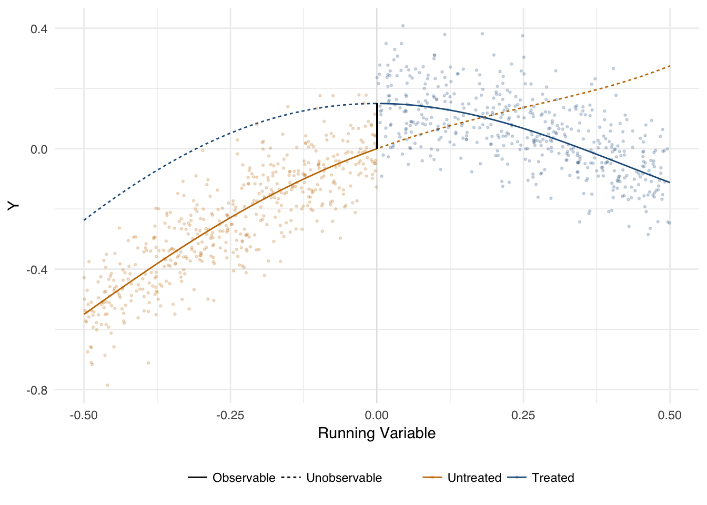

Regression discontinuity designs exploit substantive knowledge that treatment is assigned in a particular way: everyone above a threshold is assigned to treatment and everyone below it is not. Even though researchers do not control the assignment, substantive knowledge about the threshold serves as a basis for a strong identification claim.
Thistlewhite and Campbell introduced the regression discontinuity design in the 1960s to study the impact of scholarships on academic success. Their insight was that students with a test score just above a scholarship cutoff were plausibly comparable to students whose scores were just below the cutoff, so any differences in future academic success could be attributed to the scholarship itself.
Regression discontinuity designs identify a local average treatment effect: the average effect of treatment exactly at the cutoff. The main trouble with the design is that there is vanishingly little data exactly at the cutoff, so any answer strategy needs to use data that is some distance away from the cutoff. The further away from the cutoff we move, the larger the threat of bias.
We’ll consider an application of the regression discontinuity design that examines party incumbency advantage – the effect of a party winning an election on its vote margin in the next election.
Model:
Regression discontinuity designs have four components: A running variable, a cutoff, a treatment variable, and an outcome. The cutoff determines which units are treated depending on the value of the running variable.
In our example, the running variable \(X\) is the Democratic party’s margin of victory at time \(t-1\); and the treatment, \(Z\), is whether the Democratic party won the election in time \(t-1\). The outcome, \(Y\), is the Democratic vote margin at time \(t\). We’ll consider a population of 1,000 of these pairs of elections.
A major assumption required for regression discontinuity is that the conditional expectation functions for both treatment and control potential outcomes are continuous at the cutoff.1 To satisfy this assumption, we specify two smooth conditional expectation functions, one for each potential outcome. The figure plots \(Y\) (the Democratic vote margin at time \(t\)) against \(X\) (the margin at time \(t-1\)). We’ve also plotted the true conditional expectation functions for the treated and control potential outcomes. The solid lines correspond to the observed data and the dashed lines correspond to the unobserved data.

Inquiry:
Our estimand is the effect of a Democratic win in an election on the Democratic vote margin of the next election, when the Democratic vote margin of the first election is zero. Formally, it is the difference in the conditional expectation functions of the control and treatment potential outcomes when the running variable is exactly zero. The black vertical line in the plot shows this difference.
Data strategy:
We collect data on the Democratic vote share at time \(t-1\) and time \(t\) for all 1,000 pairs of elections. There is no sampling or random assignment.
Answer strategy:
We will approximate the treated and untreated conditional expectation functions to the left and right of the cutoff using a flexible regression specification estimated via OLS. In particular, we fit each regression using a fourth-order polynomial. Much of the literature on regression discontinuity designs focuses on the tradeoffs among answer strategies, with many analysts recommending against higher-order polynomial regression specifications. We use one here to highlight how well such an answer strategy does when it matches the functional form in the model. We discuss alternative estimators in the exercises.
N <- 1000
cutoff <- .5
bandwidth <- cutoff
tau <- .15
poly_order <- 4
# Model -------------------------------------------------------------------
control <- function(X) {
as.vector(poly(X, 4, raw = T) %*% c(.7, -.8, .5, 1))}
treatment <- function(X) {
as.vector(poly(X, 4, raw = T) %*% c(0, -1.5, .5, .8)) + tau}
population <- declare_population(
N = N,
X = runif(N,0,1) - cutoff,
noise = rnorm(N,0,.1),
Z = 1 * (X > 0))
potential_outcomes <- declare_potential_outcomes(
Y_Z_0 = control(X) + noise,
Y_Z_1 = treatment(X) + noise)
# Inquiry -----------------------------------------------------------------
estimand <- declare_estimand(LATE = treatment(0) - control(0))
# Data Strategy -----------------------------------------------------------
sampling <- declare_sampling(sampling_function = function(data){
subset(data,(X > 0 - bandwidth) & X < 0 + bandwidth)})
# Answer Strategy ---------------------------------------------------------
estimator <- declare_estimator(
formula = Y ~ poly(X, poly_order) * Z,
model = lm,
estimand = estimand)
# Design ------------------------------------------------------------------
design <- declare_design(
population, potential_outcomes, estimand, sampling, reveal_outcomes, estimator)diagnosis <- diagnose_design(rd_design, sims = 10000, bootstrap_sims = 1000)| Mean Estimate | Mean Estimand | Bias | SE(bias) | Power | SE(Power) | Coverage | SE(Coverage) |
|---|---|---|---|---|---|---|---|
| 0.104 | 0.15 | -0.046 | 0.008 | 0.051 | 0.002 | 0.951 | 0.002 |
We highlight three takeaways. First, the power of this design is very low: with 1,000 units we do not achieve even 10% statistical power. However, our estimates of the uncertainty are not too wide: the coverage probability indicates that our confidence intervals indeed contain the estimand 95% of the time as they should. Our answer strategy is highly uncertain because the fourth-order polynomial specification in regression model gives weights to the data that greatly increase the variance of the estimator (Gelman and Imbens (2017)). In the exercises we explore alternative answer strategies that perform better.
Second, the design is biased because polynomial approximations of the average effect at exactly the point of the threshold will be inaccurate in small samples (Sekhon and Titiunik (2017)), especially as units farther away from the cutoff are incorporated into the answer strategy. We know that the estimated bias is not due to simulation error by examining the bootstrapped standard error of the bias estimates.
Finally, from the figure, we can see how poorly the average effect at the threshold approximates the average effect for all units. The average treatment effect among the treated (to the right of the threshold in the figure) is negative, whereas at the threshold it is positive. This clarifies that the estimand of the regression discontinuity design, the difference at the cutoff, is only relevant for a small – and possibly empty – set of units very close to the cutoff.
Since its rediscovery by social scientists in the late 1990s, the regression discontinuity design has been widely used to study diverse causal effects such as: prison on recidivism (Mitchell et al. (2017)); China’s one child policy on human capital (Qin, Zhuang, and Yang (2017)); eligibility for World Bank loans on political liberalization (Carnegie and Samii (2017)); and anti-discrimination laws on minority employment (Hahn, Todd, and Van der Klaauw (1999)).
We’ve discussed a “sharp” regression discontinuity design in which all units above the threshold were treated and all units below were untreated. In fuzzy regression discontinuity designs, some units above the cutoff remain untreated or some units below take treatment. This setting is analogous to experiments that experience noncompliance and may require instrumental variables approaches to the answer strategy (see Compliance is a Potential Outcome).
Geographic regression discontinuity designs use distance to a border as the running variable: units on one side of the border are treated and units on the other are untreated. Keele and Titiunik (2016) use such a design to study whether voters are more likely to turn out when they have the opportunity to vote directly on legislation on so-called ballot initiatives. A complication of this design is how to measure distance to the border in two dimensions.
Gelman and Imbens (2017) point out that higher order polynomial regression specifications lead to extreme regression weights. One approach to obtaining better estimates is to select a bandwidth, \(h\), around the cutoff, and run a linear regression. Declare a sampling procedure that subsets the data to a bandwidth around the threshold, as well as a first order linear regression specification, and analyze how the power, bias, RMSE, and coverage of the design vary as a function of the bandwidth.
The rdrobust estimator in the rdrobust package implements a local polynomial estimator that automatically selects a bandwidth for the RD analysis and bias-corrected confidence intervals. Declare another estimator using the rdrobust function and add it to the design. How does the coverage and bias of this estimator compare to the regression approaches declared above?
Reduce the number of polynomial terms of the the treatment() and control() functions and assess how the bias of the design changes as the potential outcomes become increasingly linear as a function of the running variable.
Redefine the population function so that units with higher potential outcome are more likely to locate just above the cutoff than below it. Assess whether and how this affects the bias of the design.
Carnegie, Allison, and Cyrus Samii. 2017. “International Institutions and Political Liberalization: Evidence from the World Bank Loans Program.” British Journal of Political Science. Cambridge University Press, 1–23.
Gelman, Andrew, and Guido Imbens. 2017. “Why High-Order Polynomials Should Not Be Used in Regression Discontinuity Designs.” Journal of Business & Economic Statistics, no. Forthcoming.
Hahn, Jinyong, Petra Todd, and Wilbert Van der Klaauw. 1999. “Evaluating the Effect of an Antidiscrimination Law Using a Regression-Discontinuity Design.” National Bureau of Economic Research.
Keele, Luke, and Rocío Titiunik. 2016. “Natural Experiments Based on Geography.” Political Science Research and Methods 4 (1). Cambridge University Press: 65–95.
Mitchell, Ojmarrh, Joshua C. Cochran, Daniel P. Mears, and William D. Bales. 2017. “Examining Prison Effects on Recidivism: A Regression Discontinuity Approach.” Justice Quarterly 34 (4). Routledge: 571–96.
Qin, Xuezheng, Castiel Chen Zhuang, and Rudai Yang. 2017. “Does the One-Child Policy Improve Children’s Human Capital in Urban China? A Regression Discontinuity Design.” Journal of Comparative Economics 45 (2): 287–303.
Sekhon, Jasjeet S., and Rocío Titiunik. 2017. “On Interpreting the Regression Discontinuity Design as a Local Experiment.” In Regression Discontinuity Designs, 1–28.
An alternative motivation for some designs that do not rely on continuity at the cutoff is “local randomization”.↩